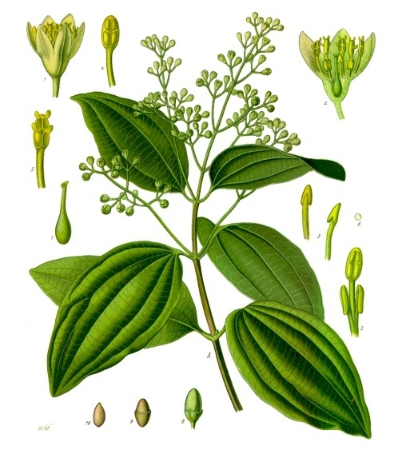
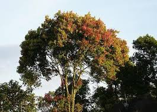

Cinnamon plant morphology are high cinnamon plant ranges between 5-15 m, the bark of the tree is dark gray smelling typical, the wood is red-brown. Single leaf, stiff as skin, elongated location, long petiole 0,5 - 1,5 cm, with 3 fruit bones leaf that grow curve.
The flowers are flowered with two or perfect flowers in yellow and small. Flower petals amounted to 6 strands in two series. This flower is not titled flowers. The fights take place with the help of insects. The fruit of the fruit is one-seeded and fleshy. The shape is rounded elongated. Color of young dark green and old purple fruit. The fruit length is about 1.30 - 1.60 cm, and the diameter is 0.35 - 0.75 cm. The seed length is 0.84 - 1.32 cm and the diameter is 0.59 - 0.68 cm.

Terms grow for this plant among others influenced by the height. Cinnamon can grow at an altitude of up to 2,000 m above sea level. The height of the cinnamon planting area can affect plant growth and skin quality such as thickness and aroma.

The benefits of cinnamon containing cinnamaldehyde compounds are:
1. Reduce Cholesterol
2. Helps Arrange Blood Sugar
3. Function Balancing Hormones
4. Meet the needs of fiber & minerals
5. Efficacious as an anti-bacterial
6. Preventing & Treating Cancer
7. Relieve the flu
8. Effective in overcoming pain during menstruation
9. Relieve rheumatic pain
10. Natural food preservative
11. Prevent Heart Disease